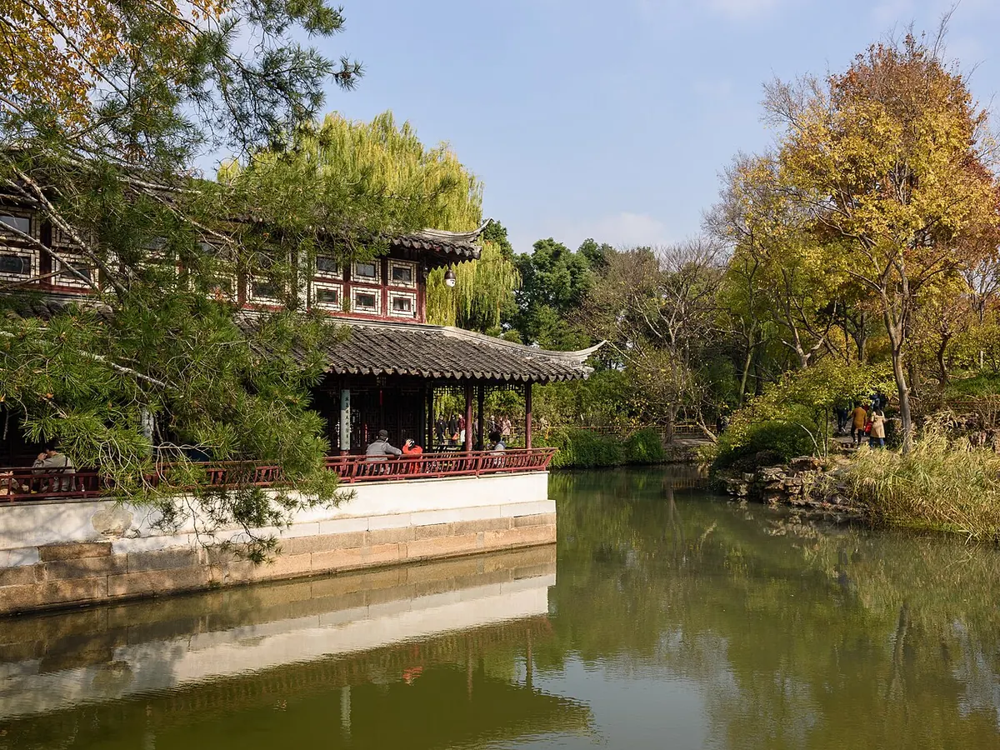

苏州 · 拙政园 / 2026.10.29
把脚步放慢，听见拙政园。
从王献臣与文徵明读起，走进水面、亭廊与园主生活交织的历史。

咫尺之内 · 再造乾坤姑苏先听历史，再走进园林
从王献臣归居、文徵明图咏，到园林的理水与借景。约 2 分钟，AI 自然女声。
王献臣、文徵明与一座文人园林的历史。
展开历史开篇讲稿与来源
拙政园的起点，是一位失意官员重新安排生活的决定。明正德四年，也就是一五〇九年，曾任御史的王献臣回到苏州，在大弘寺旧址一带营建宅园。它原先是一片有积水的地块，园主疏浚池水、种植林木，逐步形成园景；这不是一年之内完成的整齐工程。
“拙政”并不是赞美办事笨拙。园名取意于西晋潘岳《闲居赋》，把种树、灌园、卖菜和奉养家人，也看成一种安顿人生的事务。王献臣以“不善官场周旋”自嘲，将仕途上的失意，转换成归居后的生活选择。因此，这座园既是住宅后面的山水空间，也是园主对自身经历的解释。
文徵明与这段历史关系密切。他为王氏园林写记、作画并题诗，留下三十一景的记录。关于他参与总体设计的说法，官方介绍也使用“据传”；可靠的直接材料，是他保存下来的文字与图咏。读《王氏拙政园记》，会发现许多亭台都顺着水面布置，水的转折决定了观看和行走的顺序。
今天的东、中、西三园，则经历了后世分割、易主和改建，不能把所有亭屋都认作王献臣时代的原物。参观中园，重点看宽水面如何被岛山、桥梁与树木分成层次；再从远香堂望向荷风四面亭和香洲，比较建筑怎样既是观景点，又成为对岸的景物。文人的文学记忆、实际的排蓄水需要和造园构图，在这里共同起作用。这也是它成为文人园林代表的重要原因。
参考资料
01 —
点选景点，开启讲解一图游园
水域 语音景点
AI 合成语音 · 手绘方位示意，非测绘导航；实际开放与游线以园内指引为准。
游
不必赶路，园林适合慢慢看。
建议从东园入境，经中园赏水，最后在西园听雨。地图上的编号，是我们为你编排的听园顺序。
02 —
已听 0 / 8